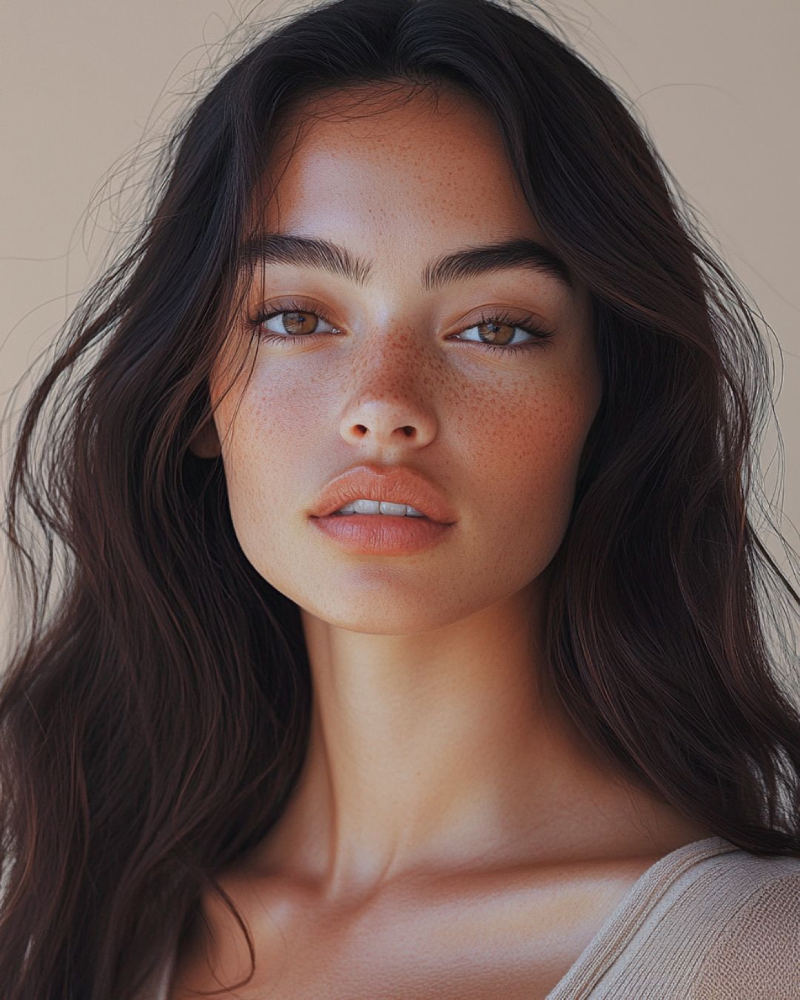
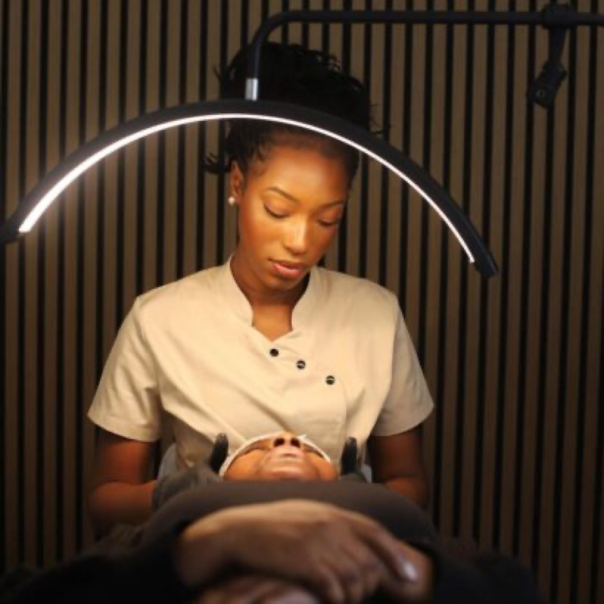
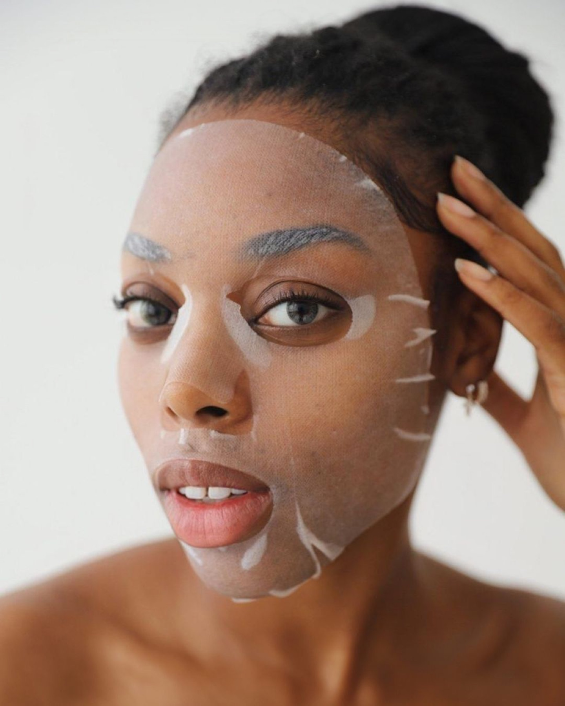
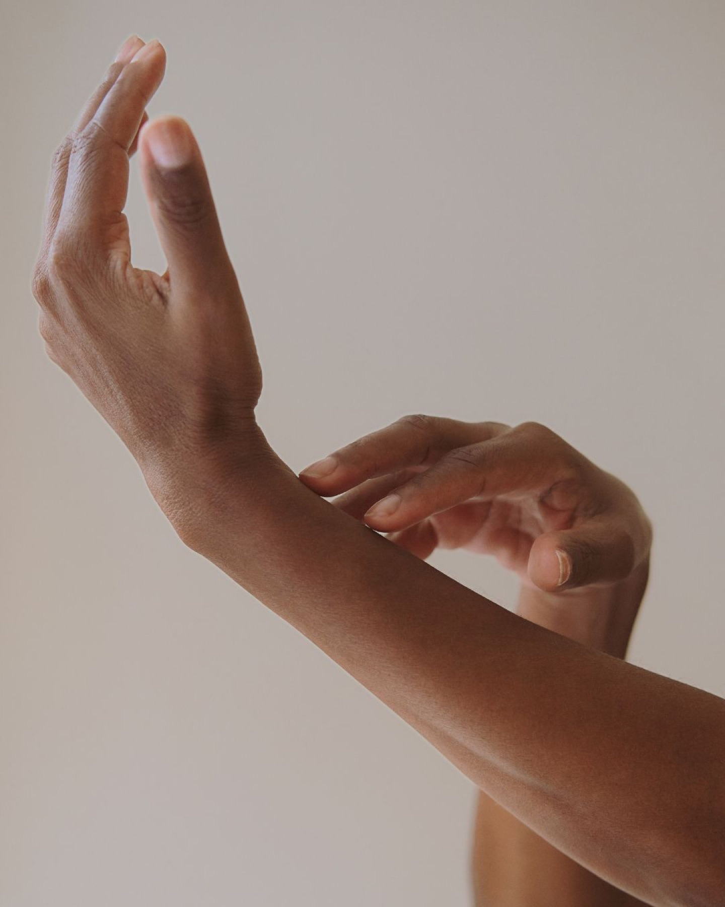
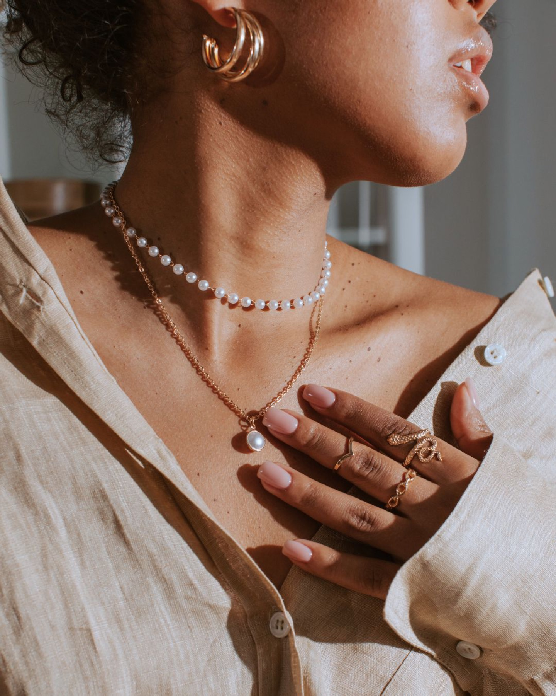
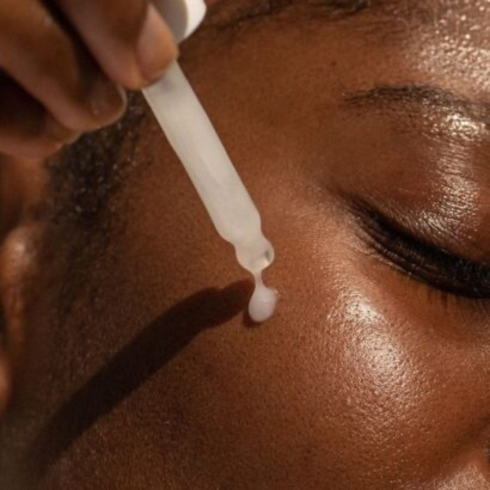

Haut, die dich zeigt.
Fachkosmetik in Köln-Porz. Klare Haut, glatte Haut, saubere Arbeit.

Leistungen
-
01Unreine Haut / Akne
Wir schauen genau hin, was deine Haut gerade braucht, und stimmen Behandlung und Pflege darauf ab. Mit Hautanalyse, gründlicher Reinigung und einer Routine für zuhause.
-
02Waxing / Sugaring
Glatte Haut ohne tägliche Rasur. Sauber gearbeitet, mit anschließender Beruhigung und Pflege der Haut.
-
03Individuelle Gesichtsbehandlungen
Keine Behandlung von der Stange: Hauttyp, Jahreszeit und dein Anliegen bestimmen, welche Schritte und Wirkstoffe zum Einsatz kommen.
-
04Dauerhafte Haarentfernung (Laser/IPL)
Haarentfernung mit Laser/IPL in mehreren Sitzungen. Vorab klären wir, ob Haut- und Haartyp dafür geeignet sind.
-
05Nageldesign / Maniküre
Gepflegte Hände und Nägel: Formen, Pflege und Farbe oder Shellac, so wie es zu dir passt.

Über Mallory Osse
„Mein Ziel ist es, mit meinem Fachwissen und meiner Expertise individuelle Hautprobleme effektiv zu behandeln.“
Als jemand, der jahrelang mit Akne und starker Hyperpigmentierung zu kämpfen hatte, kenne ich das Gefühl, das eigene Strahlen und Selbstbewusstsein zu verlieren.
Auf der Suche nach passenden Behandlungen und der richtigen Hautpflege fühlte ich mich oft schlecht beraten und allein gelassen. Besonders für viele People of Color (POC) ist es eine große Herausforderung, eine kompetente und verständnisvolle kosmetische Beratung zu finden.
Das Wissen und die Unterstützung, die mir damals fehlten, möchte ich heute in meinem Institut an dich weitergeben. Mein Ziel ist es, dir mit Fachwissen, Empathie und individueller Beratung zu helfen, dein Hautbild zu verbessern und dein Selbstvertrauen zu stärken.
Medizinische Fachkosmetikerin
Warum hier
Beratung für alle Hauttöne
Du wirst verstanden und gut beraten, ganz gleich, welchen Hautton und welche Geschichte du mitbringst.
Fokus auf unreine Haut
Mallory kennt Akne und Hyperpigmentierung aus eigener Erfahrung.
Ruhiges Studio
Eine entspannte, luxuriöse Atmosphäre, in der du abschalten kannst.
Termine nach Vereinbarung
Du buchst online oder rufst an. Wir finden eine Zeit, die passt.
Ablauf deines Termins
- 1
Gespräch und Hautanalyse
Du sagst, was dich stört. Wir schauen auf Hauttyp und Hautzustand.
- 2
Behandlung
Abgestimmt auf deine Haut, mit hochwertigen Produkten.
- 3
Nachpflege
Klare Empfehlungen für zuhause, damit es im Alltag weitergeht.
Galerie




Bei Mallory fühlt man sich sehr wohl. Das Studio ist sauber und ihre Arbeit erledigt sie auch sehr sorgfältig. Jederzeit einen Besuch wert und echt empfehlenswert!
Mallory ist die beste! Ich reise fast 2,5 Stunden immer wieder an, weil ihr Service und ihre Arbeit unheimlich gut sind. Sie geht immer eine Extrameile!
Ein Besuch bei ihr ist stets ein besonderes Erlebnis – ihre Behandlungen sind wohltuend, und es bereitet jedes Mal Freude, neue Produkte auszuprobieren.
FAQ
Wie bereite ich mich auf den Termin vor?
Komm möglichst ohne Make-up und bring mit, was du aktuell zur Pflege benutzt oder ein Foto davon. Wenn du Allergien hast oder in ärztlicher Behandlung bist, sag es uns bitte zu Beginn.
Wie lange dauert eine Behandlung?
Das hängt von der Behandlung und deinem Anliegen ab. Beim Buchen und im Gespräch sagen wir dir, womit du rechnen kannst.
Was muss ich nach der Behandlung beachten?
Du bekommst im Termin klare Empfehlungen für die Pflege zuhause. Generell gilt: Haut schonen, direkte Sonne meiden und Sonnenschutz verwenden.
Was gilt, wenn ich einen Termin absagen muss?
Bitte sag so früh wie möglich ab, per Telefon, WhatsApp oder E-Mail, damit der Termin an jemand anderen gehen kann.
Kontakt und Anfahrt
Marvelous Beauty by LoryWilhelm-Ruppert-Straße 38 L
51147 Porz
- +49 176 23634945 (Telefon und WhatsApp)
- info@marvelousbeauty.de
- Termine nach Vereinbarung
- Instagram: @marvelousbeautybylory
Danke, wir melden uns.